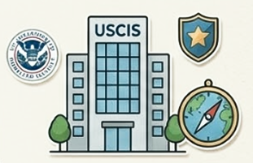
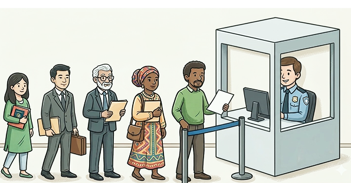

Immigration
The US immigration system follows a structured sequence. Success often depends on rigorous organization and understanding the core categories.
Key Status Categories
- Non-Immigrant (Temporary): Specific purpose and duration (e.g., F-1 student, H-1B worker).
- Immigrant (Permanent): Lawful Permanent Residence (Green Card), allowing indefinite residence and work.

The Standard Process
While every visa has different requirements, almost all green card applications follow these five core steps:

What to Expect: Must prove your relationship or your job skills.
What to Expect: You submit detailed forms about your life and background.
What to Expect: The government performs criminal and security checks.
What to Expect: They verify your story, documents, and eligibility.
What to Expect: If approved, your Green Card is mailed to your U.S. address.
The "Stay Organized" Toolkit
In the eyes of U.S. immigration authorities, having it documented is necessary. Being organized isn't just about a tidy desk—it is your most important strategic advantage.
- The "Golden Rule" of Copies: Never send your only original document (like a birth certificate or passport) to USCIS unless explicitly instructed to do so. Before you mail anything, make a clear, legible copy of the entire application and all supporting evidence.
- The Dual-System Strategy: Maintain two parallel systems:
- Physical: Use a sturdy binder or an accordion file with labeled dividers (e.g., "Identity Documents," "Financial Records," "Government Notices"). Store this in a safe, fireproof place.
- Digital: Scan every single document you have. If you don't have a scanner, use a free mobile app like Adobe Scan or Microsoft Lens. Save these to a secure cloud service (like Google Drive or Dropbox) so you can access your history from anywhere if you lose your physical folder.
- Mastering the Calendar: Immigration processes move on strict,
unforgiving timelines.
- Track Your Receipts: When you file, you will receive a Receipt Notice (Form I-797). This is your "golden ticket" while you wait. Keep it safe!
- Set Reminders: Immediately put every expiration date and appointment on your phone's calendar. Set reminders for one week, one day, and one hour before each deadline or appointment.
- The "Communication Log": Write down the dates and details of any calls with USCIS or your legal team. If an official tells you something on the phone, document it: "Spoke to [Name] on [Date], they said [Action]."
Common Pitfalls to Avoid
Even well-meaning applicants can accidentally hurt their case. Watch out for these:
- Missing Deadlines: Missing a deadline to respond to a "Request for Evidence" (RFE) can result in your case being considered abandoned. If you receive a notice, open it the same day.
- Providing Unnecessary Info: During interviews, answer questions directly. Do not volunteer extra information unless specifically asked. Stick to the facts.
- Fraudulent Services: Be wary of "notarios" or individuals who offer to handle your immigration paperwork for a low fee. In the U.S., only licensed attorneys or government-accredited representatives can provide legal advice.
Important: This guide provides a general overview of the immigration process and is not legal advice. Immigration laws are complex, frequently change, and depend entirely on your specific situation. Always consult with a qualified immigration attorney or an accredited representative before making decisions about your legal status. For official documentation, please visit the links on our Resources Page.
If you cannot afford a private attorney, look for non-profit organizations recognized by the Board of Immigration Appeals (BIA). These organizations offer low-cost, expert legal help to immigrants. You can find a list of these recognized organizations through the U.S. Department of Justice website.